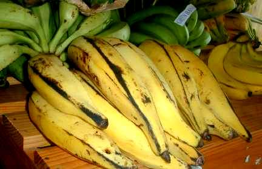

Ingredients:
- 2 large plantains
- Vegetable oil
Recipe:
- Preheat oil in a large, deep skillet over medium high heat
- Peel the plantains and cut them in half. Slice the halves lengthwise into thin pieces
- Fry the pieces until browned and tender. Drain excess oil on paper towels
Platanos Maduros History
This dish was one of Mike's favorite sides growing up.